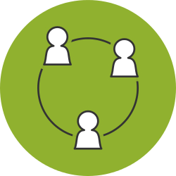

Identifiers
The use of consistent identifiers is vital to join up data on open contracting. This section introduces the Open Contracting ID (OCID), and other places where identifiers can be used in OCDS data.
There are two kinds of identifier in OCDS: Global unique identifiers which should refer consistently to a single thing wherever they are used; and local identifiers which only need to be unique within the scope of a particular block of data, and which provide a mechanism to identify specific elements in releases over time (e.g. to update the details of a particular document), or to make a link between elements within a data release or record (e.g. linking awards and contracts).
OCID
An Open Contracting ID (OCID) is a globally unique identifier for a contracting process.
Publishers will need to have, or to create, a consistent internal identifier that applies across the initiation, implementation and closure phases of a contract.
Using a consistent identifier for a contracting process that can tie together related tenders, awards, contracts and updates is vital for true Open Contracting. Without this, users cannot understand how these different processes relate to one another. Without this, the data is siloed and users cannot understand a complete picture of a contracting process.
Some publishers may not currently have a consistent identifier used across the different stages of their contracting process, with different and non-linked identifiers for tenders, awards and contracts. In these cases, publishers will need to look at ways to either update their business processes to use a consistent identifier, or will need to develop a process to map existing different identifiers to a common contracting process identifier that can be used to generate an OCID.
The use of a globally unique OCID allows third-parties to refer to a contracting process with confidence, and means that when multiple open contracting datasets are brought together there is no risk of data about different contracting processes clashing or becoming confused.
Construction
An OCID is made up of four parts. The first three can generally be set as constant values in most systems:
- A prefix agency (characters 1 - 4) - currently only ‘ocds’ (Open Contracting Data Standard)
- A - separator
- A registered prefix (charachters 6 - 11) - a random alphanumeric string given to publishers
- A publisher namespace (charachters 12 - 13) - for allow publishers to maintain separate series of local identifiers.
- A ‘-’ separator
- An internal identifier (charachters 15 and above) - drawn from publishers existing systems
This allows publishers to use an internal identifier from within their own systems, and simple to prepend the prefix and namespace to this when publishing data, making their local identifier into a globally unique identifier.
The OCID is case sensitive.
Examples
The following are examples of valid OCIDs:
ocds-a2ef3d01-1594121
ocds-df4534dg-eu-192301-2009
Prefix agency
This defaults to ‘ocp1’. During the current stage of OCDS development, the Open Contracting Partnership is the only organisation issuing valid prefixes. In future, other organisations may be able to issue prefixes, and a codelist of approved prefix agencies will be incorporated into the standard.
Registered prefix
Prefix are randomly generated lowercase alpha-numberic strings. A prefix is assigned to each organisation that holds the existing internal identifier for a Contracting Processes.
For example, a government publishing detail on their own contracting would register a single prefix, and would use this on all their OCIDs.
You can find a list of registered prefixes here along with a registration form for creating new prefixes.
A re-publisher, who has aggregated data from multiple original publishers, when those systems have not already defined their own OCIDs, should seek to identify (or register) a prefix for each source publisher where possible.
See the registration pages for details of how to obtain your OCID prefix.
Publisher namespace
The default value for local namespace is 01, but publishers are free to set this to any value in order to maintain unique OCIDs when publishing multiple sets of contracting data.
The namespace is primarily relevant when a single publisher has multiple sets of contracting process that they wish to describe using OCDS.
For example, a publisher may wish to publish contracts from different departments, each of which use different computer systems, and both of which have different contracting processes with overlapping internal identifiers (e.g. both have a contracting process internally known as 123, but these are different processes). Without the namespace, simply appending these onto the publisher prefix would generate non-unique OCID, and so the publisher can use the local namespace section of the OCID to distinguish between different sets of contracting process.
Local identifier
Publishers can select the local identifier to use for identifying a unique contracting process.
Because a contracting process is defined by a unique initiation process (a unique tender in the procurement case), a common approach will be to use the identifier of the initiation process, and to ensure that award and contract and spending data systems also keep track of this identifier.
Organizations
 Reliably identifying the legal entities involved in a contracting process is vital for transparency and accountabilty, and for carrying out analysis to improve procurement.
Publishers should seek to collect and record the legal identifier from an official register of any organisations involved in a contracting process (including procuring organisations, bidders and suppliers), and should include this in their OCDS files.
There are two parts to expressing an organisation identifier in open contracting data.
- An organization register prefix identifying a register in which the organisation is identified
- The existing organizational ID provided in that public register
Example
For example, the organisation register prefix for UK Companies House is GB-COH. The organisation Development Initiatives has been assigned the company number ‘06368740’ by Companies House. The globally unique organisation identifier for Development Initiatives can then expressed as follows:
{
"scheme":"GB-COH",
"id":"06368740",
"uri":"http://opencorporates.com/companies/gb/06368740",
"description":"Development Initiatives Poverty Research Limited"
}| scheme | id | uri | description |
|---|---|---|---|
| GB-COH | 06368740 | http://opencorporates.com/companies/gb/06368740 | Development Initiatives Poverty Research Limited |
In OCDS, the organization register prefix is included in the scheme field of an identifier block, with the existing organization id placed in the id field. If there is a recognized public URI that uniquely identifies this organization (for example, drawn from Open Corporates) this can also be given in the uri field.
Choosing an identifier
The organisation register prefix is used to refer to a register from which the organisation identifier is drawn. There are a range of different kinds of organisation list:
-
Primary registers - such as national or state company registrars. An identifier issued by these bodies has a specific legal meaning. There is a one to one equivalence between the identifier and a legal entity of a particular form in a given jurisdiction. The identifier is created at the same time that the organisation is formally constituted, and changes to the status of the organisation are recorded against this identifier in an official register. Identifiers from a primary register are strongly preferred in OCDS.
-
Secondary registers - which record a particular property of an organisation, such as being registered for VAT, or registered as an employer. An organisations identifier in such a registry might change without the organisation itself changing in nature. For example, in some jurisdictions, an organisation may de-register from VAT, and then re-register, gaining a new number in the process; or different branches of the same legal entity might register for different VAT numbers.
-
Third-party databases - which compile a list of organisations, and sometimes their sub-units, on an on-demand basis. These databases do not confer any legal status or special properties on the organisations, but may record a mapping between their own identifiers and other primary or secondary register identifiers for the organisation. A common examples of a third-party database is the proprietary Dun&Bradstreet number. The OCDS organisational identifier scheme will recognise identifiers from third-party databases, but strongly prefers those drawn from non-propietary databases, which allow users to lookup identifier information.
-
Local lists Some publishers do not map their data to external identifiers, maintaining instead a local list of suppliers. In these cases, the publisher may use their internal identifiers, and should adopt their own organisation list prefix starting with X- to use. Where possible, the publisher should also provide their local list on the web, with as much additional data about each supplier as possible, in order to maximise the chance of data users matching their local list to some more authoritative register.
Local lists may commonly need to be used for identifying public bodies, as in many countries there is no official list of public agencies.
At present, the OCDS standard defers to the organisation list prefixes provided by the IATI Organisation Registration Agency codelist. If you require codes to be added to this list, please contact the Open Contracting Data Standard support and they will work to achieve this.
Local identifiers
A single contracting process may result in multiple awards and contracts. In order to link together awards and contracts, and to support alternative serialisations of open contracting data, each tender, award and contract section of a release should have a locally unique identifier.
Unlike the OCID, which must be globally unique, the identifiers should be interpreted only in the scope of the contracting process they belong to. They must be used consistently across releases relating to the same contracting process. For example, if an award is labelled with an ID of ‘1’ in a release, any release that modifies this same award must also use ‘1’ as the ID.
A second set of local identifiers, for items, milestones and documents need only be unique in the arrays in which the appear.
In detail
Release ID
The release ID must be unique within the contracting process it is part of, and within any given data package it is part of.
I.e. within any data package, or for any given ocid, there should be no two release IDs that refer to different releases.
Tender, Award and Contract
The tender, award and contract IDs must be unique within the contracting process it is part of.
I.e. for any given ocid, there should be no two tender, award or contract IDs that refer to different tender, award or contract sections respectively.
Contracts should always cross-reference a related award (using the awardID property), as key information such as suppliers may be contained in the related award. There may be multiple contracts referring to a single award, as in the case of a framework contract, in which multiple contract are issued against a single award.
Items, Documents and Milestones
An item, document or milestone ID must be unique within a given array of items, and must be used consistently across all the releases in a contracting process.
The same id may be re-used in another array of items within the same release, and no cross-reference between these identifiers is implied.
The use of an identifier means that subsequent releases can update prior identified items, documents or milestones, without needing to republish all the items, documents or milestones.
For example:
- A release may contain tender.items (Items tendered for) and award.items
- tender.items may contain three items, with identifiers of: [1, 2, 3]
- award.items may contain two items, with identifiers of: [3, 4]
- A second release is issued in which award.items contains six items: [3, 4, 5]
In this situation, note that:
- There is no implied relationship between the tender.item with id 3 and the award.item with id 3: these could be entirely different items
- There is a relationship between the award.items with id 3 and 4 in the first release, and with award.id of 3 and 4 in the second release. The second release should be interpreted as updating items 3 and 4, and adding a new item, 5.